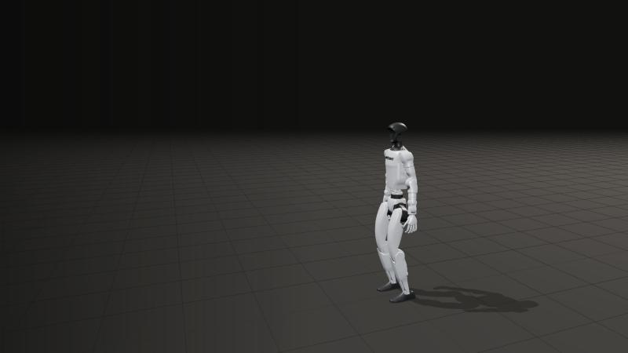
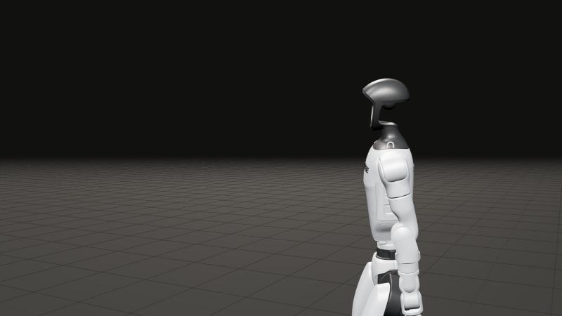

Platanus Hack 26 · Three Dimensions
TridiCesar · Juan · Pastor · Ale

El video le dice qué hacer.
La simulación le enseña cómo.
Demo
CaptureGymPolicy
Lo que acaban de ver, medido
Para equipos de humanoides
La física es de MuJoCo; nuestro es todo lo que va encima. Y no es un LLM.
Pruébenlo ahora
Abierto en GitHubplatanus-hack/…-ve-team-26
